Forecast period: 2025-01 through 2050-12
Simulation: monthly population growth + undiagnosed/diagnosed/ART/suppressed compartments + dynamic centers + spatial neighbor force
Boundary topology: residual gap ratio 0.000e+00; residual overlap ratio 0.000e+00
Hybrid: MLR 85.00%, LSTM 15.00%; spatial diffusion 10.00%
Open the interactive Region XII map
| PLANNING_PERIOD | PSGC | PROVINCE | LOCATION | POPULATION | CURRENT_ESTIMATED_TESTING_CENTERS | POPULATION_PER_CENTER | MEAN_FORECAST_PRESSURE | MAX_FORECAST_PRESSURE | HOTSPOT_MONTHS | ALERT_MONTHS | TESTING_CENTER_NEED_SCORE | PRIORITY_LEVEL | RECOMMENDED_ADDITIONAL_CENTERS | CANDIDATE_LATITUDE | CANDIDATE_LONGITUDE | CANDIDATE_METHOD | RECOMMENDATION_STATUS |
|---|---|---|---|---|---|---|---|---|---|---|---|---|---|---|---|---|---|
| 2030-12 | 1204701000 | Cotabato | ALAMADA | 75399.181 | 0.000 | 150798.362 | 45.397 | 93.456 | 29 | 231 | 59.718 | MODERATE | 1 | 7.486 | 124.584 | Municipality representative point; exact site requires accessibility, land, privacy, staffing, and DOH validation | SCENARIO PLANNING CANDIDATE - NOT AN APPROVED FACILITY SITE |
| 2030-12 | 1206509000 | Sultan Kudarat | PALIMBANG | 88635.298 | 0.000 | 177270.596 | 40.698 | 88.245 | 12 | 120 | 59.084 | MODERATE | 1 | 6.273 | 124.287 | Municipality representative point; exact site requires accessibility, land, privacy, staffing, and DOH validation | SCENARIO PLANNING CANDIDATE - NOT AN APPROVED FACILITY SITE |
| 2030-12 | 1204702000 | Cotabato | CARMEN | 83960.323 | 0.000 | 167920.647 | 35.979 | 77.424 | 21 | 59 | 56.324 | MODERATE | 1 | 7.320 | 124.743 | Municipality representative point; exact site requires accessibility, land, privacy, staffing, and DOH validation | SCENARIO PLANNING CANDIDATE - NOT AN APPROVED FACILITY SITE |
| 2030-12 | 1204712000 | Cotabato | PIKIT | 70940.505 | 0.000 | 141881.009 | 44.221 | 86.154 | 15 | 211 | 55.760 | MODERATE | 1 | 7.076 | 124.634 | Municipality representative point; exact site requires accessibility, land, privacy, staffing, and DOH validation | SCENARIO PLANNING CANDIDATE - NOT AN APPROVED FACILITY SITE |
| 2030-12 | 1204713000 | Cotabato | PRESIDENT ROXAS | 53923.153 | 0.000 | 107846.307 | 39.165 | 72.405 | 0 | 6 | 54.971 | MODERATE | 1 | 7.372 | 124.982 | Municipality representative point; exact site requires accessibility, land, privacy, staffing, and DOH validation | SCENARIO PLANNING CANDIDATE - NOT AN APPROVED FACILITY SITE |
| 2030-12 | 1204711000 | Cotabato | PIGKAWAYAN | 56714.452 | 0.000 | 113428.905 | 52.551 | 95.381 | 27 | 132 | 54.908 | MODERATE | 1 | 7.302 | 124.434 | Municipality representative point; exact site requires accessibility, land, privacy, staffing, and DOH validation | SCENARIO PLANNING CANDIDATE - NOT AN APPROVED FACILITY SITE |
| 2030-12 | 1204717000 | Cotabato | ALEOSAN | 40204.994 | 0.000 | 80409.987 | 51.979 | 90.800 | 19 | 64 | 54.362 | MODERATE | 1 | 7.187 | 124.634 | Municipality representative point; exact site requires accessibility, land, privacy, staffing, and DOH validation | SCENARIO PLANNING CANDIDATE - NOT AN APPROVED FACILITY SITE |
| 2030-12 | 1206505000 | Sultan Kudarat | KALAMANSIG | 54964.730 | 0.000 | 109929.459 | 36.507 | 72.557 | 0 | 14 | 53.376 | MODERATE | 1 | 6.513 | 124.157 | Municipality representative point; exact site requires accessibility, land, privacy, staffing, and DOH validation | SCENARIO PLANNING CANDIDATE - NOT AN APPROVED FACILITY SITE |
| 2030-12 | 1204706000 | Cotabato | MAGPET | 58143.178 | 0.000 | 116286.356 | 42.850 | 69.255 | 0 | 47 | 51.347 | MODERATE | 1 | 7.140 | 125.175 | Municipality representative point; exact site requires accessibility, land, privacy, staffing, and DOH validation | SCENARIO PLANNING CANDIDATE - NOT AN APPROVED FACILITY SITE |
| 2030-12 | 1204716000 | Cotabato | BANISILAN | 50493.151 | 0.000 | 100986.303 | 34.287 | 88.040 | 24 | 66 | 50.363 | MODERATE | 1 | 7.468 | 124.727 | Municipality representative point; exact site requires accessibility, land, privacy, staffing, and DOH validation | SCENARIO PLANNING CANDIDATE - NOT AN APPROVED FACILITY SITE |
| 2030-12 | 1208005000 | Sarangani | MAITUM | 48722.580 | 0.000 | 97445.159 | 43.251 | 90.107 | 9 | 38 | 50.270 | MODERATE | 1 | 6.115 | 124.479 | Municipality representative point; exact site requires accessibility, land, privacy, staffing, and DOH validation | SCENARIO PLANNING CANDIDATE - NOT AN APPROVED FACILITY SITE |
| 2030-12 | 1208006000 | Sarangani | MALAPATAN | 87372.584 | 0.000 | 174745.167 | 26.953 | 60.087 | 0 | 0 | 50.103 | MODERATE | 1 | 6.019 | 125.399 | Municipality representative point; exact site requires accessibility, land, privacy, staffing, and DOH validation | SCENARIO PLANNING CANDIDATE - NOT AN APPROVED FACILITY SITE |
| 2030-12 | 1206511000 | Sultan Kudarat | TACURONG | 129398.642 | 3.000 | 43132.881 | 64.814 | 86.722 | 266 | 261 | 47.724 | MODERATE | 1 | 6.664 | 124.675 | Municipality representative point; exact site requires accessibility, land, privacy, staffing, and DOH validation | SCENARIO PLANNING CANDIDATE - NOT AN APPROVED FACILITY SITE |
| 2030-12 | 1206306000 | South Cotabato | KORONADAL | 224518.489 | 4.000 | 56129.622 | 66.428 | 86.623 | 247 | 247 | 47.018 | MODERATE | 1 | 6.457 | 124.872 | Municipality representative point; exact site requires accessibility, land, privacy, staffing, and DOH validation | SCENARIO PLANNING CANDIDATE - NOT AN APPROVED FACILITY SITE |
| 2030-12 | 1206512000 | Sultan Kudarat | SEN. NINOY AQUINO | 50450.124 | 0.000 | 100900.248 | 28.984 | 55.874 | 0 | 0 | 45.456 | MODERATE | 1 | 6.433 | 124.347 | Municipality representative point; exact site requires accessibility, land, privacy, staffing, and DOH validation | SCENARIO PLANNING CANDIDATE - NOT AN APPROVED FACILITY SITE |
| 2030-12 | 1204718000 | Cotabato | ARAKAN | 54228.924 | 0.000 | 108457.847 | 40.512 | 72.729 | 0 | 67 | 45.085 | MODERATE | 1 | 7.342 | 125.151 | Municipality representative point; exact site requires accessibility, land, privacy, staffing, and DOH validation | SCENARIO PLANNING CANDIDATE - NOT AN APPROVED FACILITY SITE |
| 2030-12 | 1206311000 | South Cotabato | NORALA | 52148.502 | 2.000 | 26074.251 | 67.074 | 96.567 | 274 | 272 | 43.233 | LOW | 1 | 6.536 | 124.675 | Municipality representative point; exact site requires accessibility, land, privacy, staffing, and DOH validation | SCENARIO PLANNING CANDIDATE - NOT AN APPROVED FACILITY SITE |
| 2030-12 | 1206318000 | South Cotabato | SANTO NIÑO | 44035.021 | 1.000 | 44035.021 | 62.569 | 91.618 | 252 | 251 | 41.900 | LOW | 1 | 6.453 | 124.667 | Municipality representative point; exact site requires accessibility, land, privacy, staffing, and DOH validation | SCENARIO PLANNING CANDIDATE - NOT AN APPROVED FACILITY SITE |
| 2030-12 | 1206315000 | South Cotabato | TANTANGAN | 52196.230 | 2.000 | 26098.115 | 66.384 | 97.508 | 272 | 271 | 40.653 | LOW | 1 | 6.579 | 124.753 | Municipality representative point; exact site requires accessibility, land, privacy, staffing, and DOH validation | SCENARIO PLANNING CANDIDATE - NOT AN APPROVED FACILITY SITE |
| 2030-12 | 1206317000 | South Cotabato | TUPI | 84408.928 | 2.000 | 42204.464 | 47.741 | 87.516 | 229 | 98 | 37.836 | LOW | 1 | 6.349 | 124.969 | Municipality representative point; exact site requires accessibility, land, privacy, staffing, and DOH validation | SCENARIO PLANNING CANDIDATE - NOT AN APPROVED FACILITY SITE |
| PERIOD | PSGC | PROVINCE | LOCATION | PREDICTED_CASES | ROLLING_12M_RATE_PER_100K | HOTSPOT_CLASS | HOTSPOT_CLUSTER_ID | HOTSPOT_CLUSTER_SIZE | TRANSMISSION_PRESSURE_INDEX | TRANSMISSION_PRESSURE_LEVEL | TESTING_CENTER_NEED_SCORE | ALERT_REASON | ALERT_TYPE | ALERT_STATUS |
|---|---|---|---|---|---|---|---|---|---|---|---|---|---|---|
| 2025-01 | 1206311000 | South Cotabato | NORALA | 0.250 | 16.888 | HOT_SPOT_99 | 1 | 11 | 89.998 | CRITICAL | 76.204 | TRANSMISSION_PRESSURE_PROXY+STATISTICAL_HOTSPOT+CONNECTED_HOTSPOT_CLUSTER+TESTING_CENTER_GAP+NEIGHBOR_INFECTIOUS_PRESSURE | DYNAMIC SPATIOTEMPORAL WATCH | SCENARIO-BASED; VERIFY WITH OFFICIAL SURVEILLANCE |
| 2025-01 | 1206315000 | South Cotabato | TANTANGAN | 0.285 | 14.891 | HOT_SPOT_95 | 1 | 11 | 84.089 | CRITICAL | 71.474 | TRANSMISSION_PRESSURE_PROXY+STATISTICAL_HOTSPOT+CONNECTED_HOTSPOT_CLUSTER+TESTING_CENTER_GAP+NEIGHBOR_INFECTIOUS_PRESSURE | DYNAMIC SPATIOTEMPORAL WATCH | SCENARIO-BASED; VERIFY WITH OFFICIAL SURVEILLANCE |
| 2025-01 | 1206318000 | South Cotabato | SANTO NIÑO | 0.240 | 19.941 | HOT_SPOT_95 | 1 | 11 | 82.902 | CRITICAL | 70.961 | TRANSMISSION_PRESSURE_PROXY+STATISTICAL_HOTSPOT+CONNECTED_HOTSPOT_CLUSTER+TESTING_CENTER_GAP+NEIGHBOR_INFECTIOUS_PRESSURE | DYNAMIC SPATIOTEMPORAL WATCH | SCENARIO-BASED; VERIFY WITH OFFICIAL SURVEILLANCE |
| 2025-01 | 1206314000 | South Cotabato | TAMPAKAN | 0.235 | 12.289 | HOT_SPOT_99 | 1 | 11 | 81.170 | CRITICAL | 74.047 | TRANSMISSION_PRESSURE_PROXY+STATISTICAL_HOTSPOT+CONNECTED_HOTSPOT_CLUSTER+TESTING_CENTER_GAP+NEIGHBOR_INFECTIOUS_PRESSURE | DYNAMIC SPATIOTEMPORAL WATCH | SCENARIO-BASED; VERIFY WITH OFFICIAL SURVEILLANCE |
| 2025-01 | 1206306000 | South Cotabato | KORONADAL | 2.529 | 33.133 | HOT_SPOT_95 | 1 | 11 | 79.608 | HIGH | 69.442 | TRANSMISSION_PRESSURE_PROXY+STATISTICAL_HOTSPOT+CONNECTED_HOTSPOT_CLUSTER | DYNAMIC SPATIOTEMPORAL WATCH | SCENARIO-BASED; VERIFY WITH OFFICIAL SURVEILLANCE |
| 2025-01 | 1206511000 | Sultan Kudarat | TACURONG | 0.881 | 16.848 | NOT_SIGNIFICANT | 0 | 0 | 79.201 | HIGH | 71.077 | TRANSMISSION_PRESSURE_PROXY+TESTING_CENTER_GAP+NEIGHBOR_INFECTIOUS_PRESSURE | DYNAMIC SPATIOTEMPORAL WATCH | SCENARIO-BASED; VERIFY WITH OFFICIAL SURVEILLANCE |
| 2025-01 | 1206312000 | South Cotabato | POLOMOLOK | 1.348 | 18.719 | HOT_SPOT_90 | 1 | 11 | 76.025 | HIGH | 81.229 | TRANSMISSION_PRESSURE_PROXY+CONNECTED_HOTSPOT_CLUSTER+TESTING_CENTER_GAP | DYNAMIC SPATIOTEMPORAL WATCH | SCENARIO-BASED; VERIFY WITH OFFICIAL SURVEILLANCE |
| 2025-01 | 1206317000 | South Cotabato | TUPI | 0.305 | 13.013 | HOT_SPOT_99 | 1 | 11 | 75.341 | HIGH | 78.321 | TRANSMISSION_PRESSURE_PROXY+STATISTICAL_HOTSPOT+CONNECTED_HOTSPOT_CLUSTER+TESTING_CENTER_GAP+NEIGHBOR_INFECTIOUS_PRESSURE | DYNAMIC SPATIOTEMPORAL WATCH | SCENARIO-BASED; VERIFY WITH OFFICIAL SURVEILLANCE |
| 2025-01 | 1206302000 | South Cotabato | BANGA | 0.628 | 10.439 | HOT_SPOT_99 | 1 | 11 | 70.481 | HIGH | 58.047 | TRANSMISSION_PRESSURE_PROXY+STATISTICAL_HOTSPOT+CONNECTED_HOTSPOT_CLUSTER+NEIGHBOR_INFECTIOUS_PRESSURE | DYNAMIC SPATIOTEMPORAL WATCH | SCENARIO-BASED; VERIFY WITH OFFICIAL SURVEILLANCE |
| 2025-01 | 1206502000 | Sultan Kudarat | COLUMBIO | 0.151 | 12.370 | HOT_SPOT_90 | 1 | 11 | 66.297 | HIGH | 62.514 | TRANSMISSION_PRESSURE_PROXY+CONNECTED_HOTSPOT_CLUSTER+NEIGHBOR_INFECTIOUS_PRESSURE | DYNAMIC SPATIOTEMPORAL WATCH | SCENARIO-BASED; VERIFY WITH OFFICIAL SURVEILLANCE |
| 2025-01 | 1230800000 | General Santos City | GENERAL SANTOS | 5.243 | 21.263 | NOT_SIGNIFICANT | 0 | 0 | 65.619 | HIGH | 74.140 | TRANSMISSION_PRESSURE_PROXY+TESTING_CENTER_GAP | DYNAMIC SPATIOTEMPORAL WATCH | SCENARIO-BASED; VERIFY WITH OFFICIAL SURVEILLANCE |
| 2025-01 | 1208007000 | Sarangani | MALUNGON | 0.734 | 8.911 | HOT_SPOT_95 | 1 | 11 | 60.928 | MODERATE | 56.444 | STATISTICAL_HOTSPOT+CONNECTED_HOTSPOT_CLUSTER+NEIGHBOR_INFECTIOUS_PRESSURE | DYNAMIC SPATIOTEMPORAL WATCH | SCENARIO-BASED; VERIFY WITH OFFICIAL SURVEILLANCE |
| 2025-02 | 1206315000 | South Cotabato | TANTANGAN | 2.394 | 19.765 | HOT_SPOT_99 | 1 | 12 | 91.961 | CRITICAL | 79.043 | TRANSMISSION_PRESSURE_PROXY+STATISTICAL_HOTSPOT+CONNECTED_HOTSPOT_CLUSTER+TESTING_CENTER_GAP+NEIGHBOR_INFECTIOUS_PRESSURE | DYNAMIC SPATIOTEMPORAL WATCH | SCENARIO-BASED; VERIFY WITH OFFICIAL SURVEILLANCE |
| 2025-02 | 1206311000 | South Cotabato | NORALA | 0.932 | 18.777 | HOT_SPOT_99 | 1 | 12 | 89.045 | CRITICAL | 76.343 | TRANSMISSION_PRESSURE_PROXY+STATISTICAL_HOTSPOT+CONNECTED_HOTSPOT_CLUSTER+TESTING_CENTER_GAP+NEIGHBOR_INFECTIOUS_PRESSURE | DYNAMIC SPATIOTEMPORAL WATCH | SCENARIO-BASED; VERIFY WITH OFFICIAL SURVEILLANCE |
| 2025-02 | 1206318000 | South Cotabato | SANTO NIÑO | 0.973 | 22.275 | HOT_SPOT_95 | 1 | 12 | 84.249 | CRITICAL | 71.377 | TRANSMISSION_PRESSURE_PROXY+STATISTICAL_HOTSPOT+CONNECTED_HOTSPOT_CLUSTER+TESTING_CENTER_GAP+NEIGHBOR_INFECTIOUS_PRESSURE | DYNAMIC SPATIOTEMPORAL WATCH | SCENARIO-BASED; VERIFY WITH OFFICIAL SURVEILLANCE |
| 2025-02 | 1206511000 | Sultan Kudarat | TACURONG | 4.894 | 20.965 | HOT_SPOT_90 | 1 | 12 | 82.968 | CRITICAL | 74.026 | TRANSMISSION_PRESSURE_PROXY+CONNECTED_HOTSPOT_CLUSTER+TESTING_CENTER_GAP+NEIGHBOR_INFECTIOUS_PRESSURE | DYNAMIC SPATIOTEMPORAL WATCH | SCENARIO-BASED; VERIFY WITH OFFICIAL SURVEILLANCE |
| 2025-02 | 1206314000 | South Cotabato | TAMPAKAN | 0.975 | 14.569 | HOT_SPOT_99 | 1 | 12 | 81.460 | CRITICAL | 75.192 | TRANSMISSION_PRESSURE_PROXY+STATISTICAL_HOTSPOT+CONNECTED_HOTSPOT_CLUSTER+TESTING_CENTER_GAP+NEIGHBOR_INFECTIOUS_PRESSURE | DYNAMIC SPATIOTEMPORAL WATCH | SCENARIO-BASED; VERIFY WITH OFFICIAL SURVEILLANCE |
| 2025-02 | 1206306000 | South Cotabato | KORONADAL | 10.718 | 37.845 | HOT_SPOT_99 | 1 | 12 | 79.756 | HIGH | 68.700 | TRANSMISSION_PRESSURE_PROXY+STATISTICAL_HOTSPOT+CONNECTED_HOTSPOT_CLUSTER | DYNAMIC SPATIOTEMPORAL WATCH | SCENARIO-BASED; VERIFY WITH OFFICIAL SURVEILLANCE |
| 2025-02 | 1206302000 | South Cotabato | BANGA | 4.306 | 15.093 | HOT_SPOT_99 | 1 | 12 | 79.284 | HIGH | 64.095 | TRANSMISSION_PRESSURE_PROXY+STATISTICAL_HOTSPOT+CONNECTED_HOTSPOT_CLUSTER+NEIGHBOR_INFECTIOUS_PRESSURE | DYNAMIC SPATIOTEMPORAL WATCH | SCENARIO-BASED; VERIFY WITH OFFICIAL SURVEILLANCE |
| 2025-02 | 1206317000 | South Cotabato | TUPI | 1.481 | 14.869 | HOT_SPOT_99 | 1 | 12 | 75.877 | HIGH | 79.040 | TRANSMISSION_PRESSURE_PROXY+STATISTICAL_HOTSPOT+CONNECTED_HOTSPOT_CLUSTER+TESTING_CENTER_GAP+NEIGHBOR_INFECTIOUS_PRESSURE | DYNAMIC SPATIOTEMPORAL WATCH | SCENARIO-BASED; VERIFY WITH OFFICIAL SURVEILLANCE |
| 2025-02 | 1206312000 | South Cotabato | POLOMOLOK | 5.422 | 21.176 | HOT_SPOT_90 | 1 | 12 | 74.583 | HIGH | 79.444 | TRANSMISSION_PRESSURE_PROXY+CONNECTED_HOTSPOT_CLUSTER+TESTING_CENTER_GAP | DYNAMIC SPATIOTEMPORAL WATCH | SCENARIO-BASED; VERIFY WITH OFFICIAL SURVEILLANCE |
| 2025-02 | 1230800000 | General Santos City | GENERAL SANTOS | 24.403 | 24.154 | NOT_SIGNIFICANT | 0 | 0 | 66.245 | HIGH | 74.295 | TRANSMISSION_PRESSURE_PROXY+TESTING_CENTER_GAP | DYNAMIC SPATIOTEMPORAL WATCH | SCENARIO-BASED; VERIFY WITH OFFICIAL SURVEILLANCE |
| 2025-02 | 1206313000 | South Cotabato | SURALLAH | 3.762 | 17.698 | NOT_SIGNIFICANT | 0 | 0 | 65.539 | HIGH | 60.685 | TRANSMISSION_PRESSURE_PROXY | DYNAMIC SPATIOTEMPORAL WATCH | SCENARIO-BASED; VERIFY WITH OFFICIAL SURVEILLANCE |
| 2025-02 | 1206502000 | Sultan Kudarat | COLUMBIO | 0.657 | 14.318 | HOT_SPOT_90 | 1 | 12 | 64.624 | MODERATE | 61.417 | CONNECTED_HOTSPOT_CLUSTER+NEIGHBOR_INFECTIOUS_PRESSURE | DYNAMIC SPATIOTEMPORAL WATCH | SCENARIO-BASED; VERIFY WITH OFFICIAL SURVEILLANCE |
| 2025-02 | 1206507000 | Sultan Kudarat | LUTAYAN | 0.651 | 2.734 | HOT_SPOT_95 | 1 | 12 | 56.879 | MODERATE | 60.494 | STATISTICAL_HOTSPOT+CONNECTED_HOTSPOT_CLUSTER+NEIGHBOR_INFECTIOUS_PRESSURE | DYNAMIC SPATIOTEMPORAL WATCH | SCENARIO-BASED; VERIFY WITH OFFICIAL SURVEILLANCE |
| 2025-03 | 1206311000 | South Cotabato | NORALA | 2.409 | 19.594 | HOT_SPOT_99 | 1 | 12 | 96.567 | CRITICAL | 83.609 | TRANSMISSION_PRESSURE_PROXY+STATISTICAL_HOTSPOT+CONNECTED_HOTSPOT_CLUSTER+TESTING_CENTER_GAP+NEIGHBOR_INFECTIOUS_PRESSURE | DYNAMIC SPATIOTEMPORAL WATCH | SCENARIO-BASED; VERIFY WITH OFFICIAL SURVEILLANCE |
| 2025-03 | 1206315000 | South Cotabato | TANTANGAN | 1.843 | 21.466 | HOT_SPOT_99 | 1 | 12 | 89.682 | CRITICAL | 76.867 | TRANSMISSION_PRESSURE_PROXY+STATISTICAL_HOTSPOT+CONNECTED_HOTSPOT_CLUSTER+TESTING_CENTER_GAP+NEIGHBOR_INFECTIOUS_PRESSURE | DYNAMIC SPATIOTEMPORAL WATCH | SCENARIO-BASED; VERIFY WITH OFFICIAL SURVEILLANCE |
| 2025-03 | 1206318000 | South Cotabato | SANTO NIÑO | 2.386 | 25.601 | HOT_SPOT_95 | 1 | 12 | 89.506 | CRITICAL | 77.067 | TRANSMISSION_PRESSURE_PROXY+STATISTICAL_HOTSPOT+CONNECTED_HOTSPOT_CLUSTER+TESTING_CENTER_GAP | DYNAMIC SPATIOTEMPORAL WATCH | SCENARIO-BASED; VERIFY WITH OFFICIAL SURVEILLANCE |
| 2025-03 | 1206314000 | South Cotabato | TAMPAKAN | 1.932 | 16.744 | HOT_SPOT_99 | 1 | 12 | 86.864 | CRITICAL | 77.156 | TRANSMISSION_PRESSURE_PROXY+STATISTICAL_HOTSPOT+CONNECTED_HOTSPOT_CLUSTER+TESTING_CENTER_GAP+NEIGHBOR_INFECTIOUS_PRESSURE | DYNAMIC SPATIOTEMPORAL WATCH | SCENARIO-BASED; VERIFY WITH OFFICIAL SURVEILLANCE |
| 2025-03 | 1206511000 | Sultan Kudarat | TACURONG | 5.731 | 23.241 | HOT_SPOT_90 | 1 | 12 | 82.165 | CRITICAL | 73.360 | TRANSMISSION_PRESSURE_PROXY+CONNECTED_HOTSPOT_CLUSTER+TESTING_CENTER_GAP+NEIGHBOR_INFECTIOUS_PRESSURE | DYNAMIC SPATIOTEMPORAL WATCH | SCENARIO-BASED; VERIFY WITH OFFICIAL SURVEILLANCE |
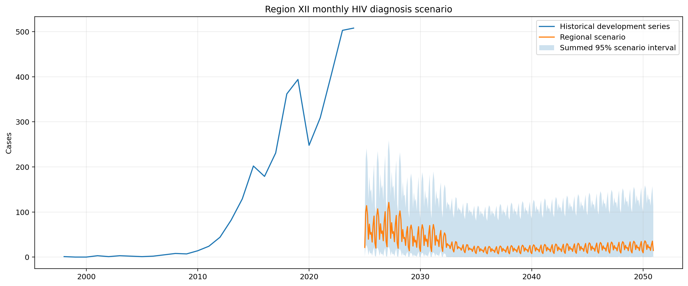
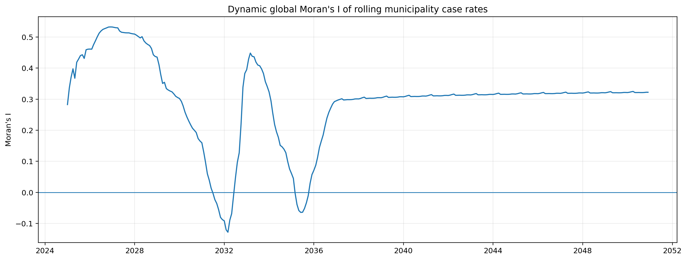
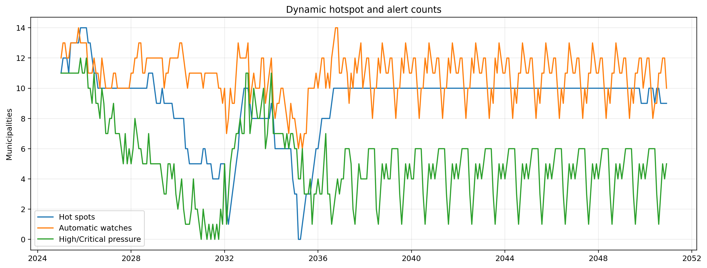
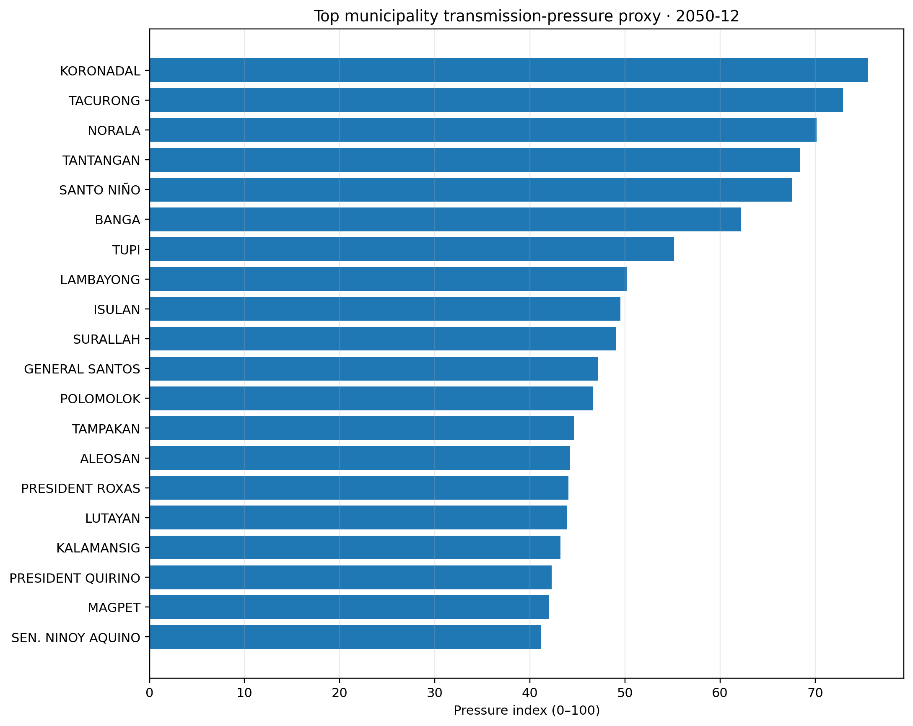
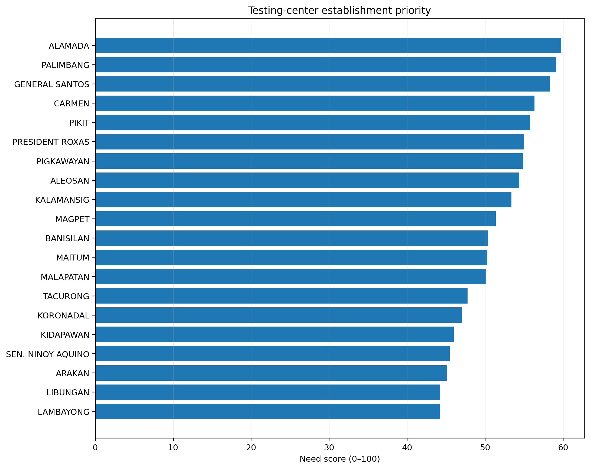
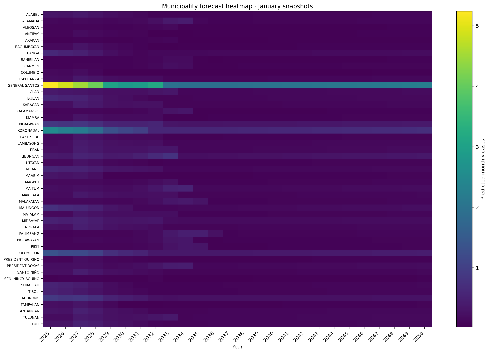
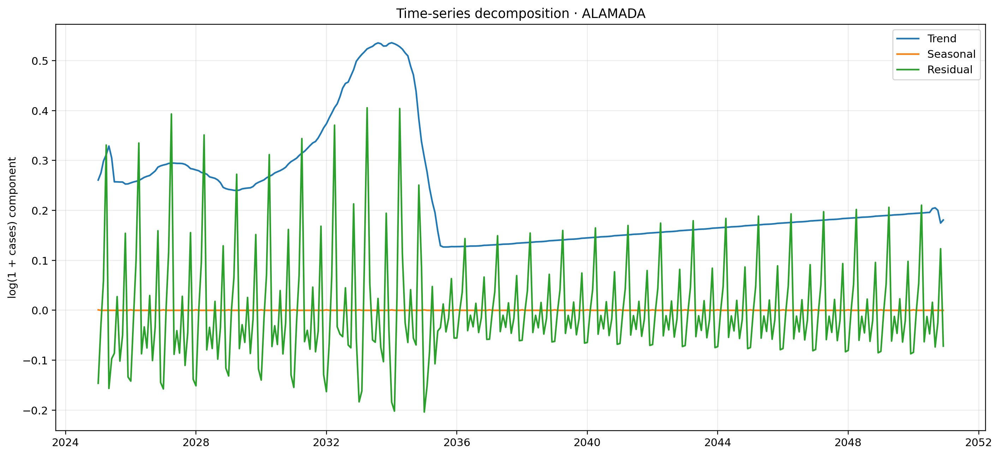
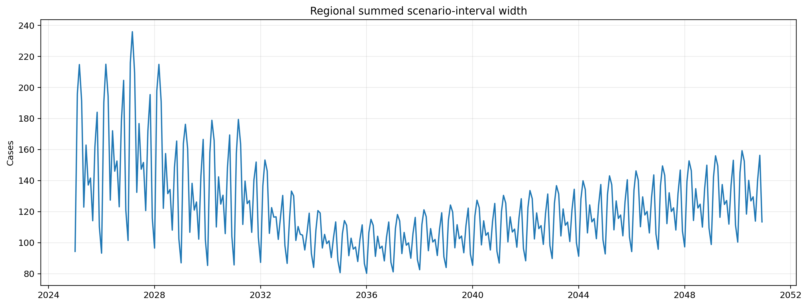
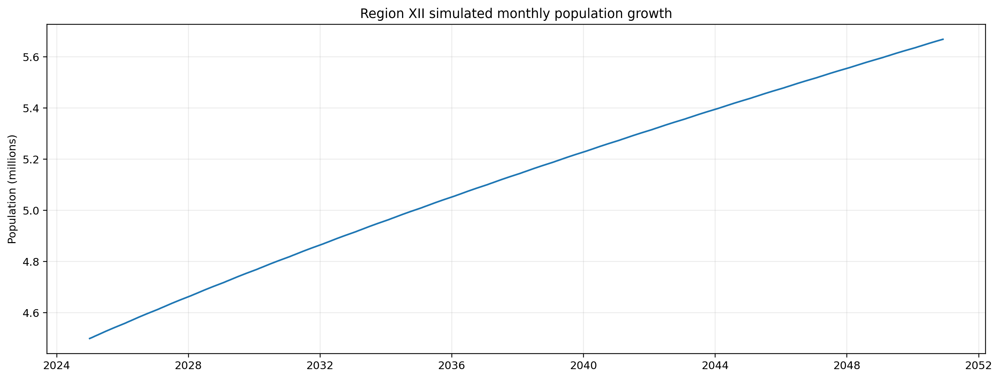
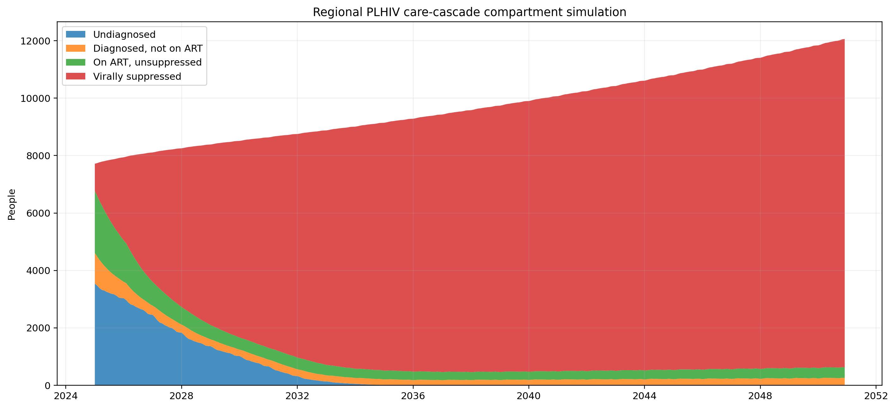
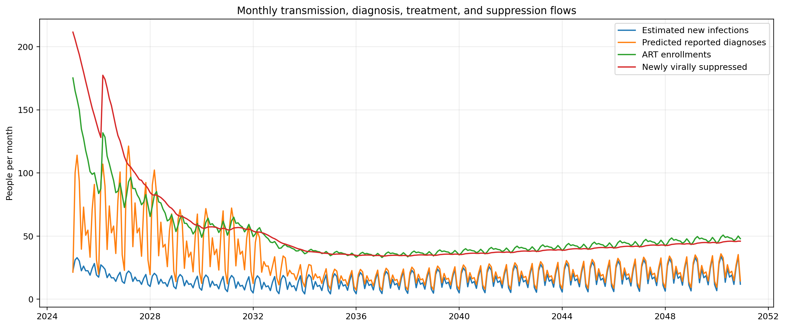
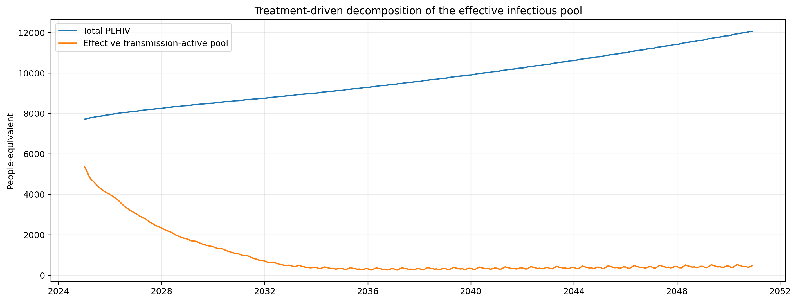
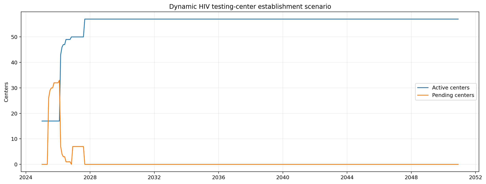
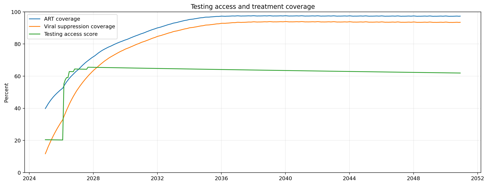
database/archive_phase2.sqlitetables/monthly_municipality_forecasts.csvtables/dynamic_hotspot_results.csvtables/time_series_decomposition.csvtables/transmission_pressure.csvtables/transmission_compartment_simulation.csvtables/testing_center_establishment_schedule.csvtables/testing_center_recommendations.csvtables/alerts.csvmaps/region12_municipalities_gap_filled.geojson